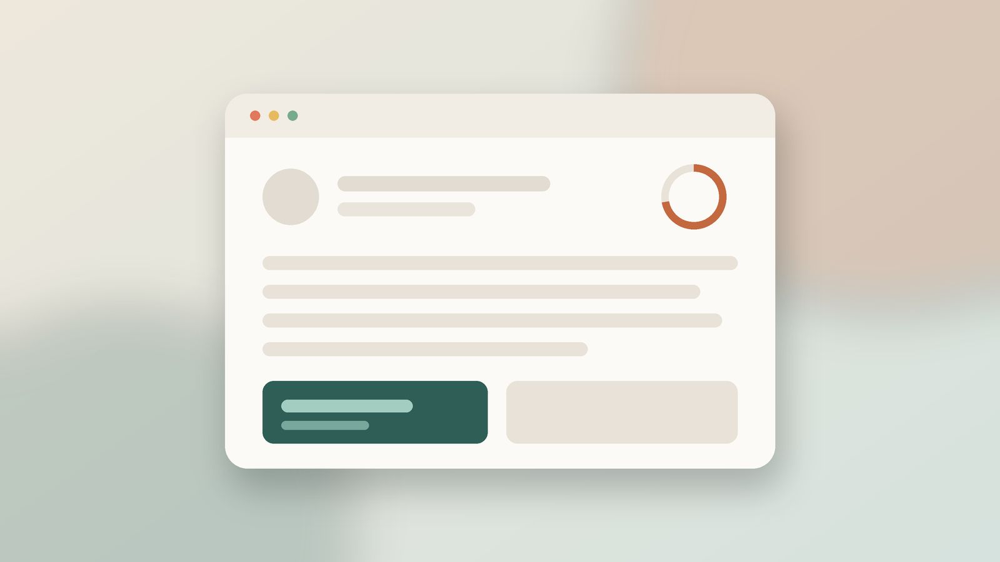
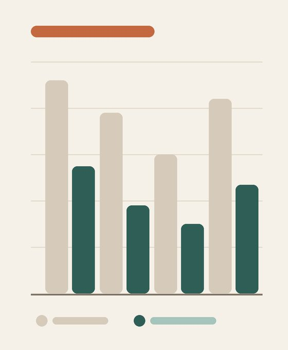

Waiting well: the quiet craft of loading states
Every interface makes people wait. The difference between a product that feels fast and one that feels broken is rarely the number of milliseconds — it is what the screen says while those milliseconds pass.

Why waiting feels longer than it is
Over three years we sat beside more than two hundred people as they used tools they relied on at work. We timed every pause. What surprised us was not how often they waited, but how poorly they guessed how long they had been waiting. A blank white screen held for two seconds was routinely described as “ages”, while a four-second load with visible progress was often not mentioned at all.
Psychologists call this temporal distortion, and it has a simple engine: uncertainty. When nothing on screen changes, people start doing the arithmetic of doubt. Did my click register? Is the network down? Should I press it again? Our job, as the research team put it in one of our early notes, is to remove the reasons for doubt rather than the wait itself.

The chart on the right compares the real duration of four loading patterns with how long participants believed they had waited. The sand-coloured bars are the clock; the green ones are the memory. In every pattern, giving people something to look at shrank the remembered wait, and in the best case it nearly halved it.
Spinners did the least to help. A spinner tells you that something is happening but nothing about what or how much longer. Determinate progress bars did better, and skeleton screens — grey outlines in the shape of the coming content — did best of all, because they let people start reading the layout before the words arrived.
None of this means the engineering work of making things faster is wasted. It means that speed and the feeling of speed are separate budgets, and most teams spend everything on the first one.
Four patterns that earn their place
After many rounds of testing we settled on a small vocabulary of loading states. Each one has a job, and each one has a moment when it is the wrong choice.
Choosing the right indicator
- Under 300 ms: show nothing. An indicator that flashes on and off is more distracting than a short pause.
- 300 ms to 2 s: use a skeleton or a subtle inline spinner next to the control the person touched.
- 2 to 10 s: switch to determinate progress, and say what is happening in plain words.
- Over 10 s: let people leave. Move the work to the background and notify them when it is done.
What a good skeleton contains
- The real layout, not a generic placeholder
- Same column widths and image ratios as the loaded page
- Headings drawn shorter than body lines
- A gentle shimmer that moves in reading direction
- Any content you already have, rendered immediately
- Titles from the previous screen
- Cached avatars and names
Optimistic updates, carefully
The fastest loading state is the one you never show. When an action almost always succeeds — starring an item, ticking a task — update the interface first and confirm with the server afterwards. The helper below is the version we use, with the rollback path that people tend to forget. It wraps fetch and keeps the previous state in snapshot until the request settles.
async function optimistic(store, change, request) {
const snapshot = store.get();
store.set(change(snapshot)); // show the result right away
try {
const saved = await request();
store.set(saved); // reconcile with the server
} catch (error) {
store.set(snapshot); // roll back, then tell the person
toast(`Couldn't save: ${error.message}`);
}
}“People forgive a slow screen. What they don’t forgive is a screen that makes them wonder whether it heard them.”
— Participant 47, logistics coordinator
Words are a loading state too
The text beside an indicator does as much work as the indicator. “Loading…” is honest but empty. “Fetching your last 30 days of orders” tells people the system understood the request, sets an expectation of size, and gives them a reason to stay. Keep the sentence short, name the thing being loaded, and avoid jokes — they are charming once and grating by the tenth visit.
Finally, design the failure. A loading state that can only ever succeed is a promise the network cannot keep. Every skeleton needs a sibling that explains, in one line, what went wrong and what the person can do next.